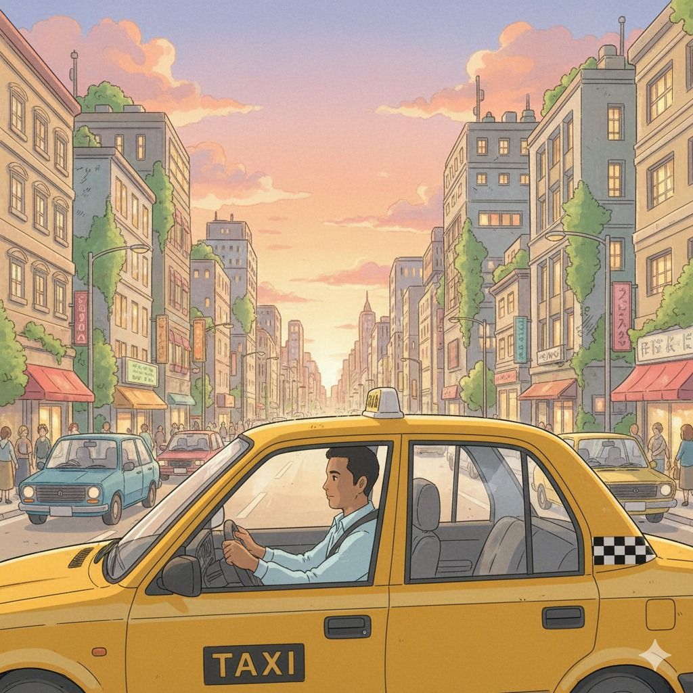
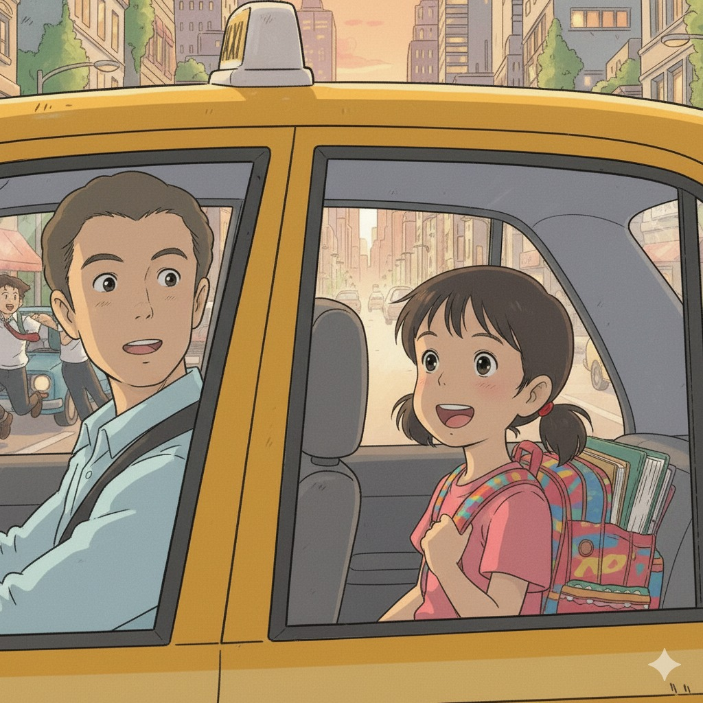
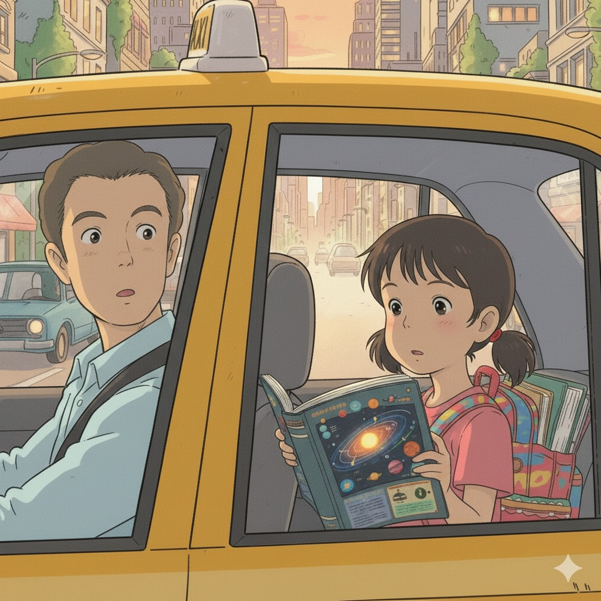
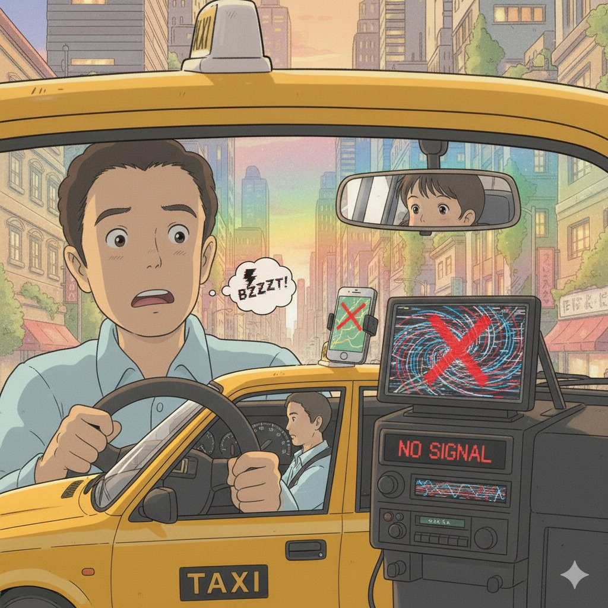
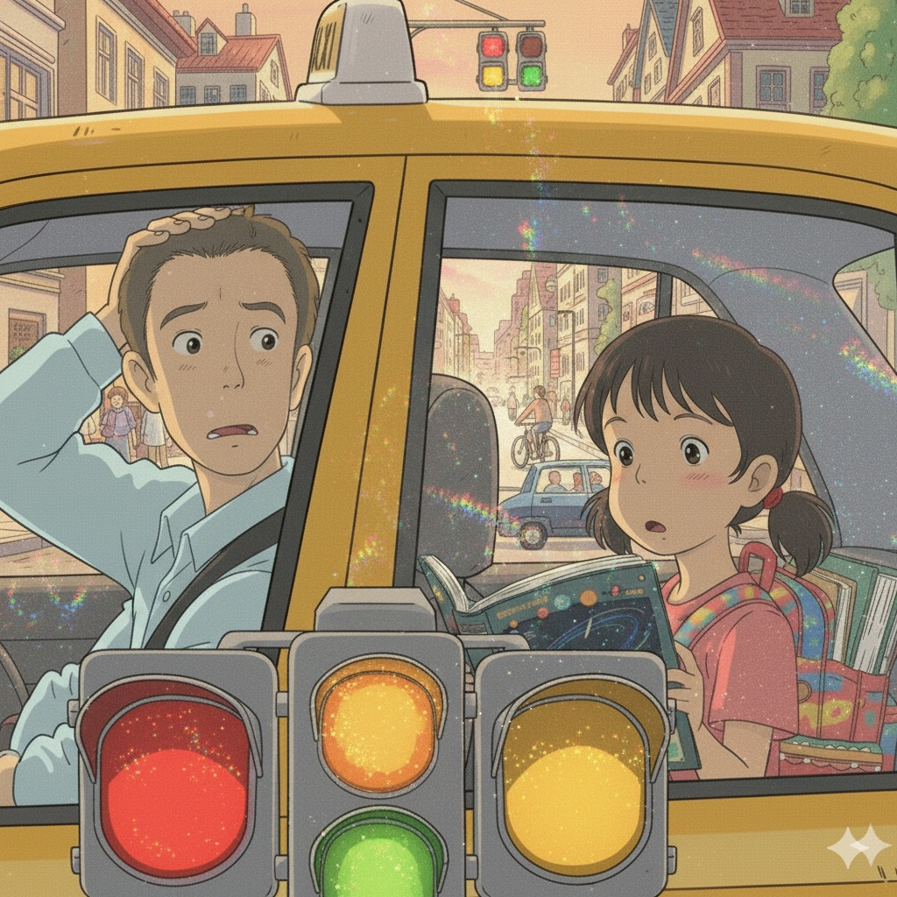
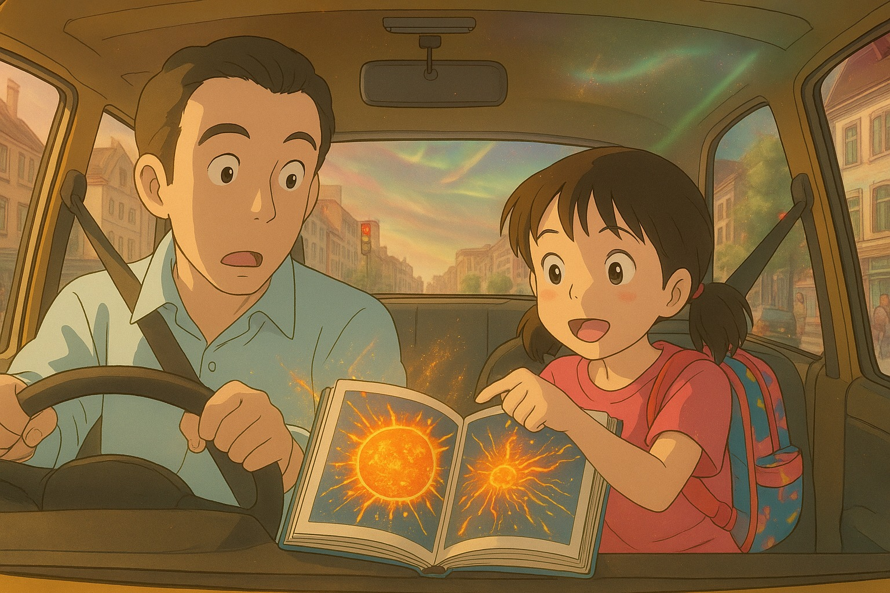
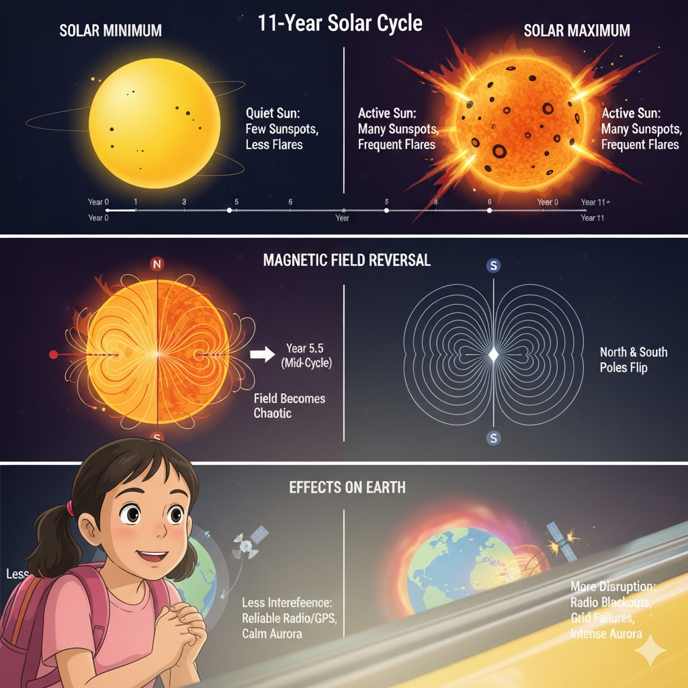
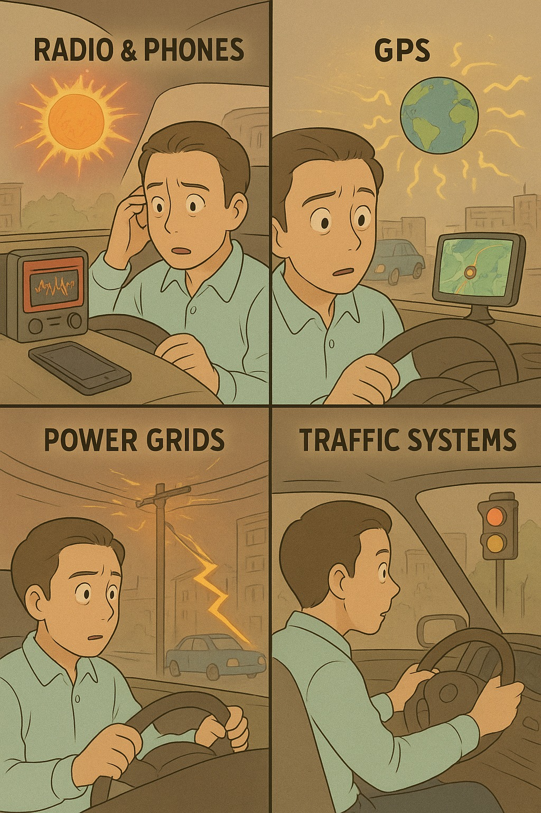
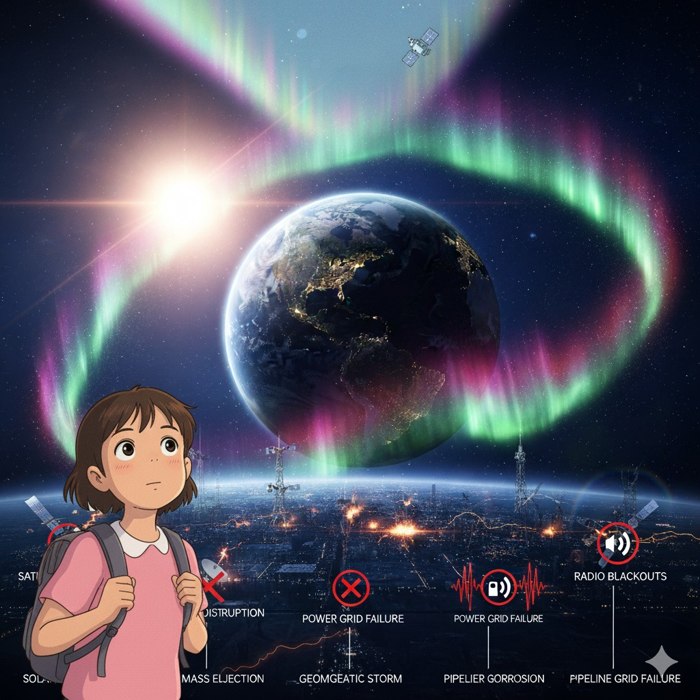
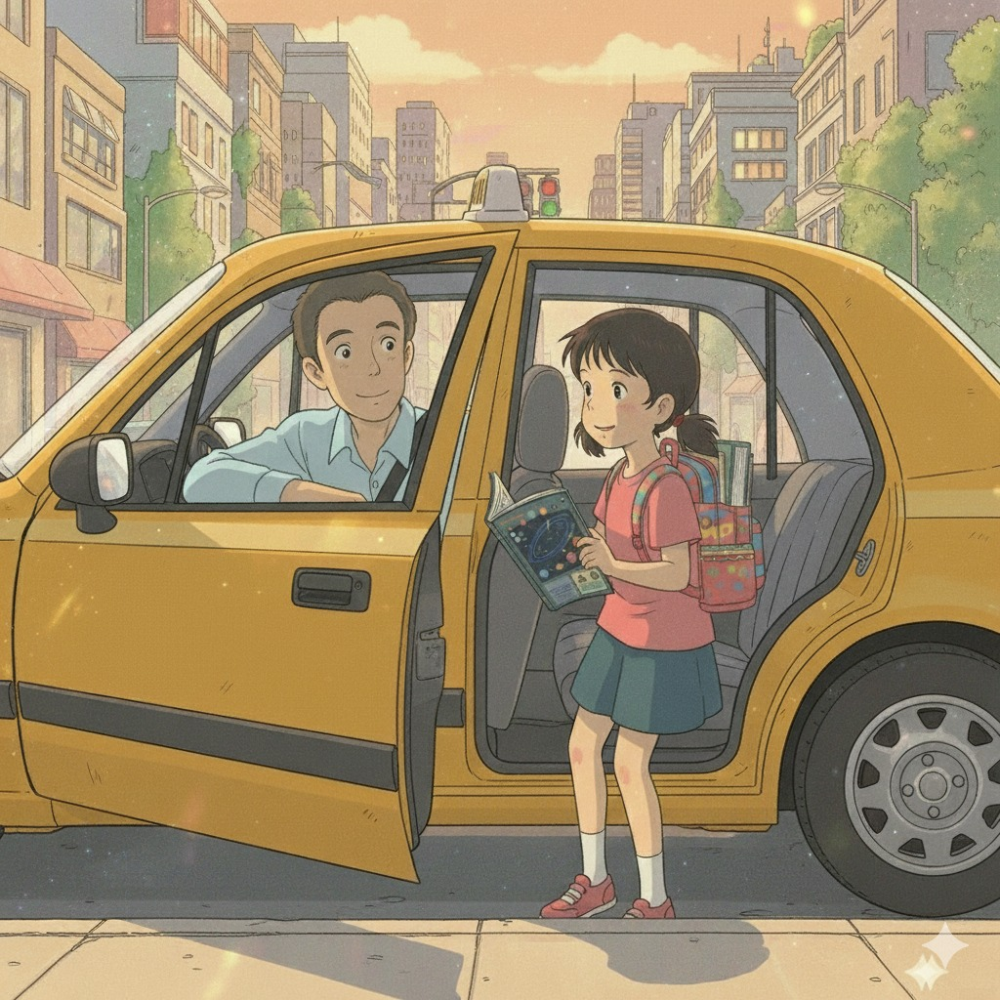

🌌 Ravi & Nayara Discover Space Weather

Ravi: "My name is Ravi, and I'm a 38-year-old taxi driver. For more than a decade, I've been cruising the streets of this bustling city in my bright yellow cab."
Ravi: "Every day brings a mix of passengers—students racing to school, office workers glued to their phones, and tourists marveling at skyscrapers."

Ravi: "My passenger was Nayara, an energetic eight-year-old with sparkling eyes and a backpack stuffed with books. She was unusually quiet at first."

Ravi: "Absorbed in her favorite science book filled with colorful diagrams of the Sun, planets, and galaxies. I had no idea that a simple ride across town would turn into a crash course on one of the most powerful forces in the universe: SPACE WEATHER."

Ravi: "Just a few minutes into our trip, things started going haywire. My GPS display spun in circles, the taxi radio buzzed with static, and even my phone signal dropped completely."

Ravi: "At the next intersection, the traffic lights blinked on and off before freezing on red. Looks like the whole city is glitching. I guess we’ll have to wait this out."

Nayara: "Uncle Ravi, I think the Sun is doing this."
Ravi: "The Sun? You mean the hot ball of fire up there?"
Nayara: "Not just fire—it’s a nuclear engine! Solar activity like flares, CMEs, and solar wind can influence the performance and reliability of our technology on Earth. That’s called space weather."

Ravi: "So how do these storms affect people like me?"
Nayara: "Every time you use GPS, satellites send signals that pass through the ionosphere. Solar storms shake this layer and can confuse your GPS. Radio and phones are also affected."
Nayara: "Geomagnetic storms can induce currents that disrupt power lines, traffic lights, and transformers."
Ravi: "So even my favorite songs aren’t safe from the Sun? That’s wild—a traffic jam caused by outer space."

Nayara: "Space weather affects almost everyone differently."
Nayara: "✈️ Pilots: High-frequency radio can fail at high altitudes."
Nayara: "⚡ Power Engineers: Geomagnetic storms push unwanted currents through power grids."
Nayara: "🛰️ Satellite Operators: Increased drag can slow satellites or throw them off orbit."
Nayara: "🌾 Farmers: GPS-guided tractors and irrigation systems can be disrupted."
Nayara: "👩🚀 Astronauts: Need to move to shielded areas to avoid radiation."
Ravi: "So the Sun isn’t just shining on us—it’s shaping everything we depend on."
Nayara: "Exactly! Every time the Sun sneezes, the whole world feels it."

Ravi: "It’s amazing how something so far away can affect our daily life in so many ways!"

Ravi: "I’ll drive on, inspired by the stars!"